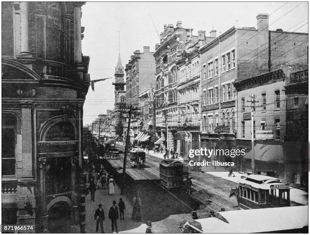
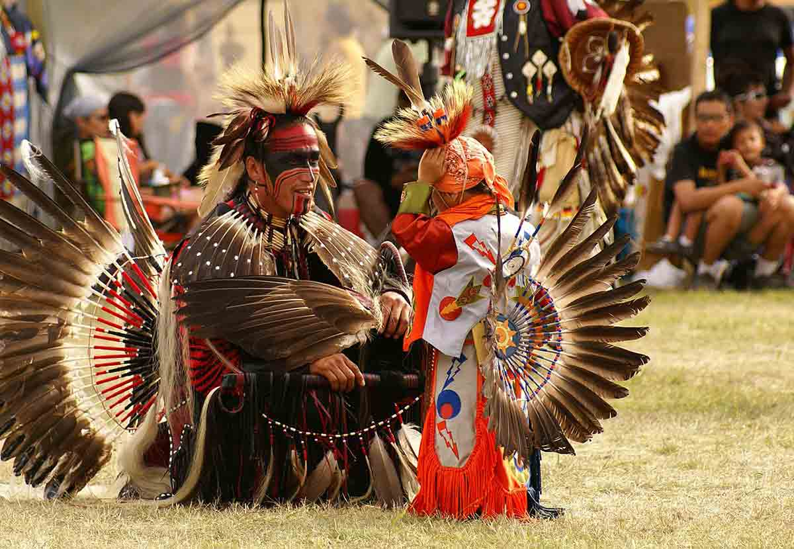

Canadá
Canadá
Cultura Canadense
A cultura do Canadá é conhecida por sua diversidade, respeito às diferenças e forte influência multicultural. O país recebeu imigrantes de várias partes do mundo, criando uma sociedade rica em tradições, idiomas, culinária e costumes.
Além das influências britânicas e francesas, os povos indígenas tiveram papel fundamental na formação cultural canadense.
O Canadá também é reconhecido mundialmente pela qualidade de vida, educação, segurança e valorização da natureza.

História do Canadá
Antes da chegada dos europeus, o território canadense era habitado por diversos povos indígenas, que desenvolveram culturas, tradições e formas de sobrevivência únicas.
Durante os séculos XVI e XVII, franceses e britânicos começaram a explorar e colonizar a região, influenciando diretamente a língua, a arquitetura e os costumes do país.
Em 1867, o Canadá tornou-se oficialmente uma confederação, iniciando sua trajetória como nação independente.
Curiosidade
O Canadá possui dois idiomas oficiais: inglês e francês.

Diversidade Cultural
O Canadá é considerado um dos países mais multiculturais do mundo.
Pessoas de diferentes nacionalidades, religiões e culturas convivem de forma respeitosa, contribuindo para a identidade moderna do país.
Grandes cidades como Toronto, Vancouver e Montreal possuem comunidades de várias partes do planeta.
Destaque
Toronto é conhecida como uma das cidades mais multiculturais do mundo.
Esportes e Tradições
O hockey no gelo é o esporte mais popular do Canadá e faz parte da identidade nacional canadense.
Durante o inverno, milhares de pessoas acompanham campeonatos, praticam esportes na neve e participam de festivais tradicionais.
Além do hockey, esportes como lacrosse, esqui e snowboard também são bastante populares.
Você sabia?
O lacrosse foi um dos primeiros esportes praticados pelos povos indígenas canadenses.
Festivais Canadenses
O Canadá realiza diversos festivais culturais ao longo do ano, reunindo música, arte, gastronomia e tradições locais.
Eventos como o Festival de Inverno de Quebec e as celebrações do Dia do Canadá atraem turistas do mundo inteiro.
Esses festivais ajudam a preservar a identidade cultural do país e fortalecem o turismo canadense.
Festival famoso
O Carnaval de Quebec é considerado um dos maiores festivais de inverno do mundo.
Curiosidades Sobre o Canadá
🍁 Símbolo Nacional
A folha de bordo presente na bandeira é um dos maiores símbolos do Canadá.
🌎 Multiculturalismo
O Canadá foi um dos primeiros países a adotar oficialmente o multiculturalismo.
❄ Inverno Canadense
Algumas regiões canadenses registram temperaturas extremamente baixas durante o inverno.